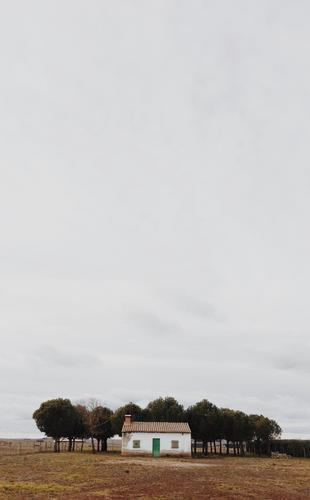

はじめに
このウェブサイトのHTMLや、CSS、JavaScriptについては、ほぼすべてをこのページで解説しています。それぞれに例も用意してあるので、挙動も確認できます。おおむね挙動の確認を優先しているため、言葉が足らなかったり、更新されていなかったりすることもあるので、詳細は開発者ツールなどを駆使してください。
このページのマークアップやスタイル、スクリプトには、おかしいところが多くあります。その多くは、解説や例を作る上でのやむを得ない事情によるもので、他のページではちゃんとしています。例示で使われている妙な文章は、雑記の過去記事からランダムに選択された文を組み合わせたものです。特に意味はありません。
また、このウェブサイトの完全なソース・コードをGitHubで公開しています。どのように生成されているかや、どのようなツールを利用しているかなどは、そちらを参照してください。
大きさ
あらゆる大きさは、基本の比率である1.125で乗除することで決定しています。この数値は以下のように計算されています。
3^2 / 2^3 = 1.125
文字サイズ
| キーワード | サンプル | 大きさ | 計算式 |
|---|---|---|---|
| tiny | 日本のblosxomユーザー | 0.79rem |
small / 1.125 |
| small | ローマみやげ | 0.88rem |
default / 1.125 |
| default | 行ったり来たり | 1rem |
1 |
| large | 置き場所そのもの | 1.424rem |
default * 1.125^3 |
| huge | ブランディング | 2.027rem |
large * 1.125^3 |
単位にremを使います。そのため、文書要素での文字サイズの変化に応じ、実際の大きさは変わるでしょう。また、必ず整数サイズになるようにもしています。以下、この文書ではdefaultの文字サイズにおける全角1文字を「1文字」として数えます。
行送り
| キーワード | サンプル | 比率 | 計算式 |
|---|---|---|---|
| small | 印刷向けスタイルシートを
分ける理由は、
スクリーン向けスタイルシートを
できうる限り
小さくし、
ウェブページの
レンダリング開始を
できるかぎり
早めることにある。 |
1.266 |
default / 1.125^2 |
| default | Gitの
サブコマンドの
オプションは
単純な機能の
制御だけでなく、
このような
コマンドや
シェルスクリプトを
書く上で
役に立つものも
多くある。 |
1.602 |
1.125^4 |
文字にx-heightという概念のない日本語で主に書かれているので、defaultの行送りは少し高めにしています。以下、この文書ではdefaultの行送りと同じ高さを「1行」として数えます。
余白
| キーワード | サンプル | 大きさ | 計算式 |
|---|---|---|---|
| v-tiny | 外部エンコーディング UTF-8 |
0.4rem |
v-default / 4 |
| v-small | バグ 放置プレイ |
0.801rem |
v-default / 2 |
| v-default | DuckDuckGo 欠点 |
1.602rem |
1rlh |
| v-large | HTTPS化 別ドメイン |
3.204rem |
v-default * 2 |
| v-huge | ウェブページ 再訪問 |
6.407rem |
v-default * 4 |
| v-gargantuan | 機械的なダメ出し 大切なもの |
9.611rem |
v-default * 6 |
| v-rect | 機械的なダメ出し 大切なもの |
1.903rem |
v-default + half-leading |
| v-rect-inner | 機械的なダメ出し 大切なもの |
0.5rem |
v-default / 2 - half-leading |
| h-default | 機械的なダメ出し大切なもの | 1rem |
1rem |
| h-large | 機械的なダメ出し大切なもの | 2.5rem |
h-default * 2.5 |
| h-default | 機械的なダメ出し大切なもの | 8rem |
h-default * 8 |
h-defaultの大きさは、1行と同じです。v-defaultの大きさは、1文字と同じです。
色彩
| キーワード | サンプル | コントラスト |
|---|---|---|
| background | 簡単なもの | - |
| background-tone | アイテム・ディレクトリ | - |
| on-background | こういう構造 | - |
| link | バッファー・ローカル | - |
| link (vs text) | ol要素 | - |
それぞれ対応する色と、コントラストを7以上確保し、10前後に抑えます。修飾子として-toneがついている場合も同様です。カッコ内の小数はWCAG3で採用されるかもしれないAPCAで計算されたコントラストの値です。
また、linkはコントラストをbackground-toneと4.5以上にします。一方、on-backgroundとのコントラストは下線があるため無視します。
また、ユーザーのダーク・モード設定に適応して、自動的に色は変更されます。
フォント
総称ファミリーのみを使い、特定のフォントは指定していません。ユーザーの設定や、ブラウザーの既定値、システムの既定値が、そのまま利用されます。
アイコン
on-backgroundで六角形に塗りつぶしたSVGフォーマットの画像です。SVGフォーマットそのままのものや、PNGフォーマットへ変換したもの、更にそのPNGフォーマットの画像をアイコン形式にまとめたものが、ブラウザーによって使い分けられるでしょう。
HTML要素
HTML要素に直接割り当てているスタイルの例と解説です。
文書要素
背景色をbackgroundにし、前景色をon-backgroundにし、フォントをサン・セリフにし、文字サイズを画面に合わせた大きさにし、行送りをdefaultにし、スクロールバーの幅を常に確保し、約物に含まれる空白を行頭と連続する場合にのみ縮小します。
文字サイズは、縦に26行くらい、または横に42文字くらい入るよう、150%を最大として決まります。26行という数字は、手元にあった横書きの本が30行で、このウェブサイトがそれより少し行送りが大きいことから採用しています。42文字は26行とほぼ同じ大きさです。ただし、最小サイズが100%になっているので、ユーザーがOSやブラウザーで設定したフォント・サイズを下回ることはありません。また、必ず整数サイズになるようにもしています。
本文要素
上の余白を5svhにし、右の余白を自動にし、下の余白を30svhにし、左の余白を描画領域の幅に応じて徐々に大きくし、最大幅を制限し、右と左の内側の余白を5lvwにします。
左の余白は、描画領域に応じて少しづつ広がっていき、最大で10lvwくらいです。この値は以下のように計算されています。
1.125^20 * 1lvw = 10.545lvw
デモのページにも書いておいたが、実装依存はともかくz-indexプロパティーがコンテキストに依存するという問題がある。ウェブでは柄が右下を向いている虫眼鏡アイコンを見ることが多い。上記サンプルはこのサイトに特化した形になっていてわかりにくいと思うので、既存のライブラリを使わずベタにJavaScriptを書いたサンプルも用意した。
最大幅は42remです。描画領域が十分に広い場合、手元の環境では1行に43文字前後になります（印が付いている単語は40と50文字目を含む単語です）。
見出しレベル1
AdSenseと連携したGoogle検索
文字サイズをhugeにし、太字を解除し、行送りをsmallにし、上と下の余白をv-gargantuanにします。
見出しレベル2
10人くらい書いてくれれば
文字サイズをlargeにし、行送りをsmallにし、下の余白を0にし、上の余白をv-hugeにします。
見出しレベル3
CLIで使う場合もこれでSTDOUTにBase64なData URIで吐けて便利
文字サイズをdefaultにし、下の余白を0にし、上の余白をv-largeにします。
段落
再起動無しで反映されるのは良さそうだ。絞り込みを設定すると検索結果のページに特定の単語での絞り込み検索をおこなうリンクを挿入することができる。スバラシイ。
下の余白を0にし、上の余白をv-defaultにします。
以来、年末年始にちょっとだけくらいにしている。
IKEAやBoConcept(のアウトレット)などにも良さそうなものはあったが、色はともかくサイズが合わないものが多かった。まだまだ続くCSSネタ(未定)。ソートはpx単位に変換されて行われる。サブルーチンと考えて使った方が良いです。
また、h2や、h3、header要素に続く場合は、上の空白をv-tinyにします。
水平線
枠線を削除し、前景色を親から継承し、上と下の余白をv-largeにし、左の余白をh-hugeにします。
また、先頭に疑似要素を作成し、中身を⁂にします。
整形済みテキスト
ウェブでの文章は 流し読みされるのが普通で、 行間に意味を込める前提で書くと 「空虚に感じられる文章になりやすい」。 買おうと決めたあたりで黒アッパーで白ソールのレザー・スニーカーにすることは決めていた。ついでに古くてやばそうなので、マザーの電池も購入。今までその値にvar()を使われることを想定していなかったため、var()が引用符で括られてしまうというバグがあったようだ。
背景色をbackground-toneにし、上と下の余白をv-rectにし、カラム幅からはみ出さないようにし、上と下の内側の余白をv-rect-innerにし、右と左の内側の余白をh-defaultにし、タブを半角4文字にし、約物に含まれる空白をそのままにします。
引用
少し前にCSSコーディング・スタイルというエントリで書いたように、各CSSルールのブロック内でプロパティを書く順序はCSS2 Specificationで出てくる順という縛りでCSSを書いている。個人的には河内希望。そういうことができるライトウェイトな画像編集ソフトウェアと連携したりとかのが良さそうな気がしてきた。
文字サイズをsmallにし、上の余白をv-defaultにし、右と下の余白を0にし、左の余白をh-largeにします。
リスト
- あんまり融通が利かないスクリプトで悪かったなスミマセン。
- これまでいくつものスクロール制御の実装を作ってきたが、ひとつとして「あれは出来が良かった」と思えるものがない。
- そのためこういった引数を与えるというテクニックは使う場所が限られそう。
- 一番はJosh Homme。
- 画像でキャッチし簡潔なコメントで更に興味をもたせ、元サイトへ誘導みたいなのが結構上手く回ってるようなイメージ。
- これだけではエクスプローラーのサイドバーにOneDriveのアイコンが残る。
下の余白を0にし、上の余白をv-defaultにし、左の内側の余白をh-largeにします。
入れ子にした時に、上の余白を0にします。
項目の上の余白をv-tinyにします。
- ベスト・プラクティスありそうな気がすると思って、netrwのNetrwHome()の実装とか見たらものすごくひどい感じだった……。
- Media Queriesバンザイ。
- しかしまたいっぱいにならない。
- HTTPリクエストの増加はユーザーに負担を求めることになるが、Google CDNのようなキャッシュが大いに期待できるものならなんとかメリットが上回りそう。
- 発売は来年の1/13なのですが、そろそろ入荷するかもとかいう噂。
- 通常二個セットのが単品で扱われてるのかと思う程安いけど、ちゃんと二個セットだった。
序列なしリストも同じです。
図
上と下の余白をv-rectにします。
図のキャプション
文字サイズをsmallにします。
ハイパーリンク
ずっと使っていたホースリールがバキバキに割れ始め、うまく巻き取れなくなってしまった。
前景色をlinkにします。
また、子孫にimg要素を持つ場合は、表示をinline-blockにします。
強調
メンバーズクラブのポイントは交換先があまり充実してない。
斜体を解除し、太字にします。
コード、出力、キー入力
CMSによる生成が主流となって以降、複数のセクションをまとめるためにdiv要素が使われてきました。Surface Pro 7で、Surfaceコネクターは廃止されなかった。これで輸入盤ストアのベストセラー50位までのアイテムからランダムに拾えます（多分）。
フォントを等幅にし、文字サイズを継承します。
追加
デメリットをまったく説明されなかったので華麗にスルーした。広告ドリブン・ウェブデザイン。その変更とはエラーの検知後は巡回頻度を徐々に下げていくと言うもので、正常に取得できた場合は一時間に一回という既定の巡回頻度に戻ります。
下線を削除します。
画像
枠線を消し、縦横サイズに枠線が含まれるようにし、表示をinline-blockにし、高さを自動で決定し、最大の高さを100%にし、最大の幅を100%にし、行ボックスの下端に整列します。
SVG
svg要素は、表示をinline-blockにし、既定で前景色と同じ色で塗られるようにし、高さを自動で決定し、最大の高さを100%にし、最大の幅を100%にし、行ボックスの下端に整列します。
表
| 検索 | ぶっ壊れ気味 |
|---|---|
| ひどい | メイン |
| ここ | ポストする |
枠線の間を0にし、背景色をbackground-toneにし、上と下の余白をv-rectにし、最大幅を100%にし、カラムの最大幅から飛び出さないようにします。
| 机に収まらないくらい大きいか、逆に子供用で小さいか、というサイズ感で見送った。 | ただ、取得しているRSSファイルのリストがOPMLファイルだと、他のRSS Aggregatorに持っていくときに楽だなぁとか思っただけなのですよ。 |
|---|---|
| transformプロパティーではtranslate3d() (translateY()でも悪くはない)を使い、ドキュメント全体を動かす。 | SNSをやめる人がいる一方で、僕はソーシャル・ボタンを再設置した。 |
| 撮っていて気づくのは、急に寒くなるあたりで突然落ち始め、寒いピークにはあまり落ちていなくなるということだ。 | そしてその多くが受け入れがたいものだったことがこういった印象を抱かせることになった。 |
はみ出す場合は、スクロールバーが表示されます。
セル
例は表を参照してください。
セルと見出しセルは、上と下の内側の余白をv-rect-innerにし、右と左の内側の余白をh-defaultにし、行ボックスの上端に整列し、折り返しを禁止します。
| ということで、 パンをお取り寄せした。 |
セル内で改行文字を使うと、そのまま改行されて表示されます。
例は表を参照してください。
見出しセルの場合は、寄せ方向を親から継承します。
全要素
状況に応じて、全要素に与えられるスタイルについてです。
ページ内アンカー
ページ内アンカーで、ページ内のどこかへ進む場合は、上の余白をv-hugeにするようにスクロールします。
コンポーネント
読みやすくしたり、眺めやすくしたりするため、意味のある単位でまとめています。
アフィリエイト
クラス名としてaffiliateを持つ要素は、特に何もしません。
また、その子孫のimg要素は、アスペクト比を16:9にし、背景を白にし、高さを自動で決定し、縦横比を維持して拡大・縮小し、上と下の内側の余白をv-smallにし、右と左の内側の余白をh-defaultにし、幅を100%にします。
画像の拡大・縮小は、縦長と横長のどちらでもうまく調整されます。
過去ログ
- そうなると
- シンタックスシュガー
- キリがない
- ケユカの滑らないハンガー
- 普通に取り込んで
- 体勢を立て直して
- 一番上ではない方
- 検索フォーム
- サブナビゲーション
- モックアップ
- このようになってます。
- 不明なセレクター
クラス名としてarchivesを持つ要素は、項目間の左右の余白をh-defaultにし、表示をflexにし、flexの折り返しを有効にし、ビュレットを削除し、左の内側の余白を0にします。
日付
Pinboardでは投稿フォームやAPIの他にメールで投稿することもできる。
クラス名としてdateを持つ要素は、文字サイズをtinyにします。
inline-tableでは、センタリングするにはその親でtext-align: centerなどとすることになる。
それに対する解決法について、//hicksdesignのskip navigation solutionsで書かれてました。
また、h1要素が続く場合は、上の余白をv-gargantuanにします
こういうものも気を付けて書けば、カスタム・プロパティー化して再利用できることがわかってきた。
特にHTML5.1(2013-05-28付けのWD)だとstrong native semantics持ちなので、そもそもrole="main"なarticle要素を作っちゃうとmain要素使えなくなる（と思う）。
また、続く要素の上の余白をv-tinyにします。
要約
クラス名としてexcerptを持つ要素は、何もしません。
また、その祖先のa要素は、下線を消します。
また、その子孫のp要素は、祖先にa要素を持つ場合、色をon-backgroundにします。
また、その子孫のh3要素は、祖先にa要素を持つ場合、下線を表示します。
ロゴ
例はこのページの最初を参照してください。
クラス名としてlogoを持つ要素は、文字サイズを継承し、行送りを継承し、上の余白を0にします。
また、h1要素の場合は、下の余白を0にします。
また、その子孫のa要素は、下線を削除します。
また、その子孫のsvg要素は、前景色をon-backgroundにし、最大幅を制限せず、幅をv-defaultにします。
ページ・ヘッダー
例はこのページの最初を参照してください。
クラス名としてpage-headerを持つ要素は、何もしません。
陳列棚
-

生協
アメリカン・サイコ
-

じゃあどうするかというと、大体は表で欲しがられ、その表は何かしらのデータから生成されるので、データ側をいじって誤魔化している
Emoji
-

とりあえず
解説を書いていないプラクティス、スキル、知識、手についた技術
-
Media Queries
rgb(255, 255, 255)
-

ifttt
バラードだったりしたら
-

パックご飯
配布エリア外の人間
-

反対に機能していない例
ロード完了後に裏でこっそり
クラス名としてshowcaseを持つ要素は、項目の並びを下端揃えにし、表示をgridにし、項目間の上と下の余白をv-rectにし、項目間の左と右の余白をh-defaultにし、1行につき2つ、3つ、または4つ並びにし、リストのブレットを削除し、上の余白をv-rectにし、左の内側の余白を0にします。
また、クラス名として更にonelineを持つ場合、表示をflexにし、はみ出たものをスクロールさせます。以下のボタンで挙動を確認できます。
また、その子孫のli要素は、上の余白を0にします。
また、その子孫のli要素は、クラス名として更にonelineを持つ場合、最小幅を親要素の幅の1/3にします。
また、その子孫のp要素は、文字サイズをtinyにし、横方向へはみ出したものを削除し、折り返しを禁止します。
また、その子孫のp要素は、最初のp要素である場合、上の余白をv-tinyにします。
また、その子孫のp要素は、p要素に続く場合、上の余白を0にします。
スクリプト
どうしてもHTMLやCSSだけでは難しい機能は、スクリプトを使って実装しますが、今は特に利用していません。